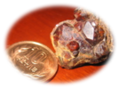

鉱石山〜朝倉山
GWも後半の部の2日目。今日も天気が良さそうなので、昨日に引き続いて軽い山歩き。今回は鉱山跡でお宝探しという目論見も持って、出かけて来ました。
桐生を車で発ち、県道沼田大間々線を経由して、武尊山南麓の川場村に向かう。残雪の武尊山を望む田園では菜の花が満開で、田んぼの代搔きが始まっていた。桜川に沿って山あいに入ると「ふじやまの湯」があり、このすぐ先が鉱石山への林道の入口だ。「駐車場No.5」という看板のある広場に車を置いて出発する。


林道に入ると金属プレート製のハイキングコース案内図があり、その中に⚒️マークが刻まれている。ふむふむ、鉱山跡はここだな、と場所をしっかり確認。谷間の杉林の中を一直線に登って行くとWCのある休憩所に到着し、ここから幅の広い山道に入る。木々はようやく芽吹いた頃だが、下草は青々としてキケマンなどの花が咲いている。


山腹をジグザグに登ると、トロッコの軌道跡に出た。レールは暫く続くが、ほどなく終点となる。このあたりに⚒️があるはずだ…。周囲をキョロキョロ、斜面を登ったり降りたりして探し回り、ついに発見！なんだ、案内図通りの場所でした(^^;)


鉱山跡には2mくらいの高さの露頭があり、その周辺に散在する岩の欠片にガーネット（柘榴石、ざくろいし）の結晶が付いていて、日光にキラキラ輝いている。赤褐色の結晶が群れて付いている様子は、確かに柘榴のようだ。かつて研磨剤の用途で採掘されていたとのことだが、何時頃のことだろうか。

小さい結晶はたくさんあるが、大きくて完全なものとなると、なかなか見つからない。それでも、写真の結晶を拾うことができた。私にとっては珍しい物で、嬉しい。
さて、ジュエリー探索はこのあたりで切り上げ、山歩きに戻る。緩やかな稜線に出て、「世田谷区民健康村鉱石山休憩所」という看板のある第1休憩所を過ぎ、雑木林とカラマツ林の境界を歩くとWCのある東峰に着く。鉱石山の山頂はこのすぐ先だが、先に朝倉山に登って来ることにする。
朝倉山への稜線には、明瞭な踏み跡が続いている。一旦下った鞍部から東側の展望が良く、皇海山のなかなか鋭い三角形のピークを遠望する。雑木林とササの尾根を登ると、朝倉山の山頂に着いた。
山頂には三角点と、木賊山（朝倉山の別名）と記された山名板がある。展望は木の間から武尊山が見えるくらい。静かなところだ。今日は天気が良く、頂上でも暑さを感じるので、缶ビールがとてもうまい。ラーメンを作って昼食にする。


朝倉山から鉱石山に戻る。鉱石山の頂上は平坦な尾根の一地点で、山名標識が立っているだけの場所だ。4人グループのハイカーさんがビニールシートを広げていて、宴会が一段落したところか、まったりしていた。朝倉山には立ち寄っていなかったそうで、そんなに時間はかからないですよ、と話すと登りに行かれた。今回会ったハイカーさんはこの方々だけ。
ところで、鉱石山の標高について。現地の標識には1205mとあり、群馬県HPにもそのように記されている。しかし、地形図の等高線を数えると、明らかに1220m以上ある。まあ、細かいことですが。
下山は、鉱石山の頂上から西へ稜線を辿り、明るい雑木林の中を緩く下る。WCのあるピークを過ぎると傾斜が増して、新緑のカラマツ林を下る。


やがて林道に出て、あとはこれをポクポク下る。途中、迦葉山や武尊山の眺めが良い場所があり、特に武尊山は、残雪の稜線から山麓まで長く裾野を広げて、雄大だ。

武尊山の稜線を仰ぐ

林道から舗装道に出て、川場スキー場からの道と合流すれば、登山口までは約6分の距離だった。駐車場のすぐ前がふじやまの湯なので、早速、入りに行く。内湯のみだが、広い浴室の中央にはデンと巨石があり、なかなか雰囲気の良い♨️でした。